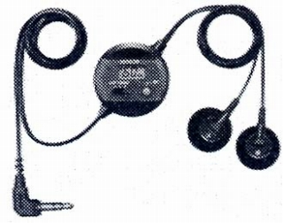
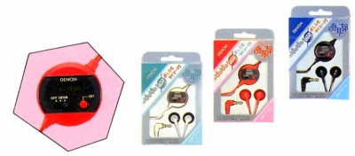

AH-T7
 


■価格 4,600円■型式 ダイナミック型■振動板 ■インピーダンス 40Ω■再生周波数帯域 20-20,000Hz■許容入力■感度 106dB/mW■コード 1.2mOFC L型ステレオミニプラグ■重量 20g（タイマー含む）■発売 1987年■販売終了 1989年頃■備考 1分刻み60分のお知らせタイマー付きペットネームは「時耳郎（ときじろう）レッド、ホワイト、ブラック仕上げあり